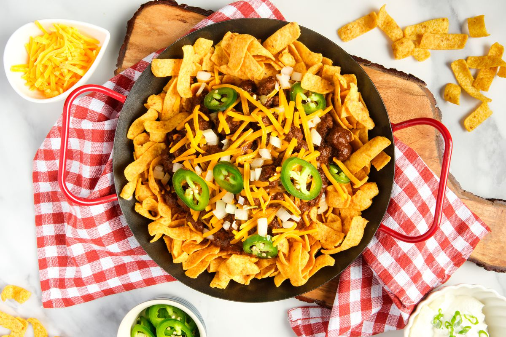

Frito Chili Pie

A delicious Tex-Mex Classic
Enjoy this meaty and beany "pie" layered with corn chips and topped with cheese and sliced jalapeños.
Ingredients
- 16oz. Refried Beans
- 16oz. Kidney Beans
- 2 Lbs. Ground Beef
- Taco Seasoning
- 1 Tbsp. Chili Powder
- 0.25 tsp. Garlic Powder
- 0.25 tsp. Onion Powder
- 0.25 tsp. Crushed Red Pepper
- 0.25 tsp. Dried Oregano
- 0.5 tsp. Paprika
- 1.5 tsp. Ground Cumin
- 1 tsp. Salt
- 1 tsp. Pepper
- Onion, diced
- 1 Cup Salsa
- 4oz. Diced Green Chilies
- 2 Jalapeños, sliced
- 2 Bags Corn Chips
- 3 Cups Shredded Mexican Blend Cheese
Steps
- Brown and crumble beef over medium heat.
- Skim off fat, and add taco seasoning to taste.
- Add kidney beans, refried beans, onion, green chilies, and salsa. Mix to combine.
- In a large baking dish, assembly in this order:
- Corn chips
- Half of chili
- More corn chips
- Half of cheese
- Rest of chili
- Even more corn chips
- Rest of cheese
- Jalapeño slices
- Bake at 350°F for 30 minutes.